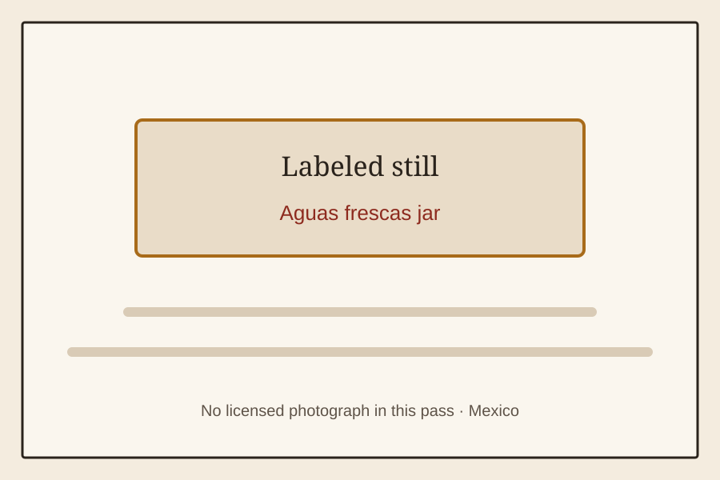

The Old Shelf / Mexico / Aguas frescas jar
Aguas frescas jar
Mexicostills only
A labeled still for Aguas frescas jar. No licensed photograph was available in this pass.

A labeled still for Aguas frescas jar. No licensed photograph was available in this pass.